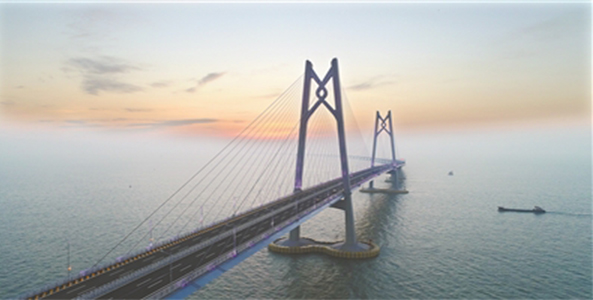
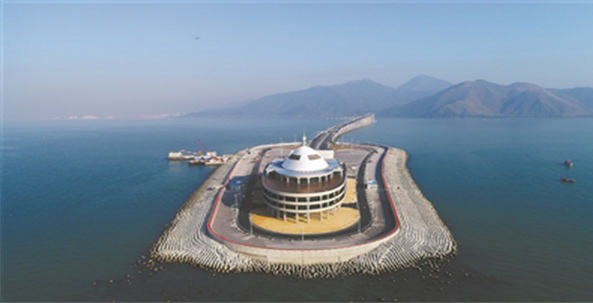

一桥飞越港珠澳 两岛扮靓伶仃洋
2018年01月21日 07:44
- 
- 
港珠澳大桥预计七一前通车 “大桥游”率先火起来
夜幕下犹如长虹卧波，白天又似蛟龙出海！元旦前夜，世界最长的跨海大桥港珠澳大桥主体全线亮灯，在标志着大桥具备通车条件的同时，伶仃洋面上也诞生了一道流光溢彩的新的风景线。
据透露，港珠澳大桥预计将在今年7月1日前正式通车。有趣的是，“大桥游”已率先火爆起来，广州、珠海等地的部分旅行社纷纷组团揽客坐游轮看港珠澳大桥。今年春节过后，大桥上还将迎来一场别开生面的“马拉松”，届时将有万余人登上这座跨海大桥，一睹这个世纪工程的绝世风采。
全长55公里的港珠澳大桥，其中包括约30公里的海中主体，主体为“桥岛隧”结构；两端是分别抵达港珠澳的连接线，整体看大桥如同一个巨大“Y”字横卧在海面上。港珠澳大桥是中国新的地标性建筑之一，被誉为“世界桥梁界的珠穆朗玛峰”，英国《卫报》称之为“现代世界七大奇迹”之一。大桥目前虽未通车，但俨然已成珠海一个新的热门景点，那么港珠澳大桥到底有哪些看点？广州日报全媒体记者昨日驱车上桥，先睹为快。
驶上珠澳口岸人工岛，首先映入眼帘的是港珠澳大桥珠海公路口岸，桥头是一个现代化的收费站，上有“港珠澳大桥”5个鲜红的大字。驶入收费站，进入大桥主桥一路向东，宽阔的桥面有双向6车道，中间由金属护栏隔开，新画的车道线，崭新的沥青路面，一路畅通无阻。桥外海面上，近处的轮船时而拉响悠扬的汽笛；远处的小岛时而映入眼帘。